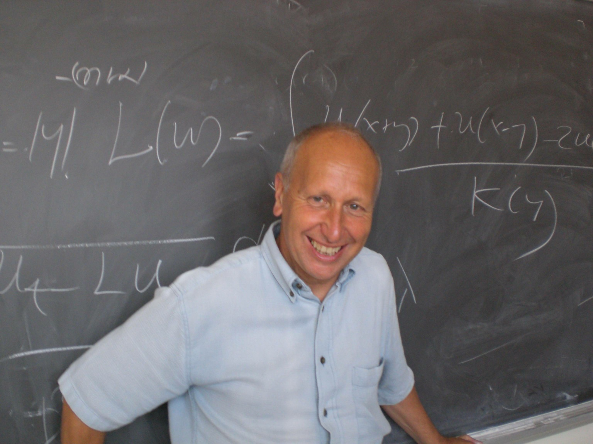

|  |
|
| Regularity theory for fractional
diffusion Luis A. Caffarelli The University of Texas at Austin Preparatory lectures Lecture 1: video Lecture 2: video Lecture 3: video |
Numerical methods for fractional diffusion Ricardo H. Nochetto University of Maryland Lecture 1: slides - video Lecture 2: slides - video Lecture 3: slides - video Survey notes |
Research conferences:
Registration: CLOSED -
We no longer accept registration.
To register, send the following information to nsfe@iastate.edu
You will receive a confirmation
email.
This conference is supported in
part by the Institute
for Mathematics and its Applications (IMA) through its
Participating Institution (PI) Program. PI members may use
IMA/PI funds to support personnel's travel to this conference.
Deadline
for registration: July 1, 2017.
Funding for graduate
students:
Applications CLOSED.
If you are a graduate student and would like to apply for free
lodging (shared hotel room with another graduate student
participant) and partial support for travel expenses (for US
based students only), please send the following
information to nsfe@iastate.edu
Please ask your advisor to send a letter of recommendation supporting your application to nsfe@iastate.edu
Deadline to apply for funding,
including advisor's letter of recommendation: May 1,
2017.
Lodging: Special rates are no longer available.
The following hotels in Ames have agreed to reserve a block of
rooms at a special rate for participants of NSFE 2017.
Contact:
Organizing Committee: